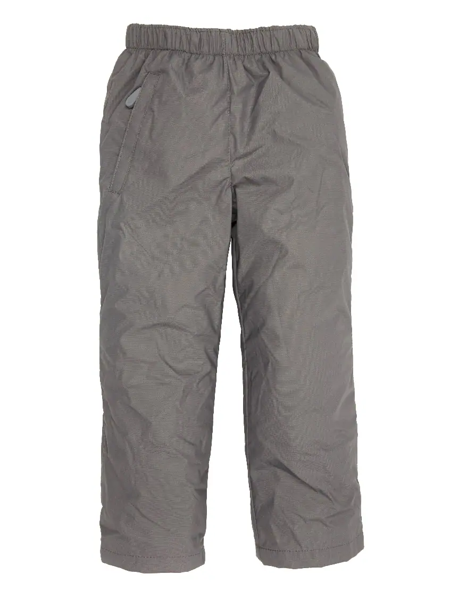
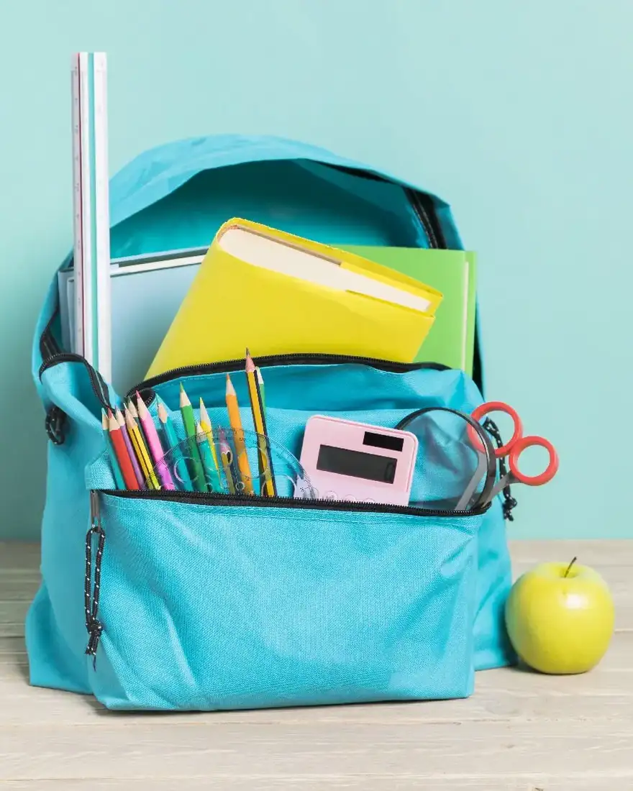
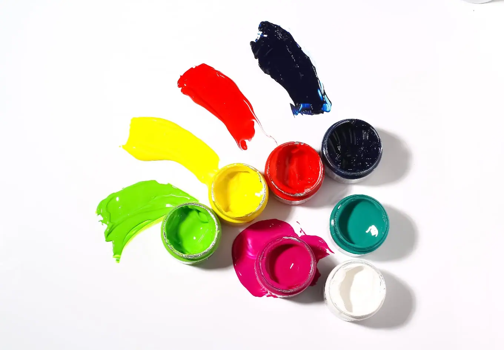

Giáo trình HSK 2 · Lesson 4你穿红色的很好看
Nǐ chuān hóngsè de hěn hǎokàn
Bạn mặc đồ đỏ trông rất đẹp.
Mục tiêu bài khóa
Sau bài học, người học có thể vận dụng các điểm ngôn ngữ chính trong giao tiếp.
动态助词“过”Nói về trải nghiệm đã từng có.
“因为……所以……”Diễn đạt nguyên nhân và kết quả.
比较副词“更”So sánh mức độ với 更.
Khởi động · 热身
Chọn từ rồi chọn đúng hình ảnh tương ứng.
💡 Hãy chọn một từ trước.
Từ vựng · 生词
Mặt trước có từ, pinyin, nghĩa, loại từ và nút phát/dừng. Mặt sau có hình ảnh và ví dụ theo PowerPoint.
过
guo
đã từng
trợ từChạm vùng trống để lật thẻ

我去过北京。 🔊wǒ qù guò běi jīng。
Tôi đã từng đến Bắc Kinh. 我给王老师打过电话了。 🔊Wǒ gěi Wáng lǎoshī dǎ guo diànhuà le.
Tôi đã gọi điện cho thầy/cô Vương rồi. 商场
shāngchǎng
trung tâm mua sắm
danh từChạm vùng trống để lật thẻ

这家商场是新开的。 🔊zhè jiā shāng chǎng shì xīn kāi de。
Trung tâm này mới mở. 妈妈去商场买了衣服。 🔊Māma qù shāngchǎng mǎi le yīfu.
Mẹ đã đi trung tâm mua sắm mua quần áo. 这个商场很大，东西很多。 🔊Zhège shāngchǎng hěn dà, dōngxi hěn duō.
Trung tâm mua sắm này rất lớn, hàng hóa rất nhiều. 进去
jìnqù
đi vào
động từChạm vùng trống để lật thẻ
我们进去看看吧。 🔊wǒ men jìn qù kàn kàn ba。
Chúng ta vào xem nhé. 他走进去了。 🔊Tā zǒu jìnqù le.
Anh ấy đã đi vào trong rồi. 我们进去吧。 🔊Wǒmen jìnqù ba.
Chúng ta vào trong đi. 条
tiáo
lượng từ cho vật dài
lượng từChạm vùng trống để lật thẻ
我想买一条裤子。 🔊wǒ xiǎng mǎi yī tiáo kù zi。
Tôi muốn mua một chiếc quần. 这条裤子多少钱？ 🔊Zhè tiáo kùzi duōshao qián?
Cái quần này bao nhiêu tiền? 妈妈买了两条鱼。 🔊Māma mǎi le liǎng tiáo yú.
Mẹ đã mua hai con cá. 裤子
kùzi
quần
danh từChạm vùng trống để lật thẻ

这条裤子很好看。 🔊zhè tiáo kù zi hěn hǎo kàn。
Chiếc quần này rất đẹp. 我和妈妈去商场买了裤子。 🔊Wǒ hé māma qù shāngchǎng mǎi le kùzi.
Tôi và mẹ đã đi trung tâm mua sắm mua quần. 我喜欢这条裤子。 🔊Wǒ xǐhuān zhè tiáo kùzi.
Tôi thích cái quần này. 白色
báisè
màu trắng
danh từChạm vùng trống để lật thẻ
我喜欢白色。 🔊wǒ xǐ huān bái sè。
Tôi thích màu trắng. 你喜欢白色吗？ 🔊Nǐ xǐhuān báisè ma?
Bạn có thích màu trắng không? 我不喜欢白色的书包。 🔊Wǒ bù xǐhuān báisè de shūbāo.
Tôi không thích cặp sách màu trắng. 因为
yīnwèi
bởi vì
liên từChạm vùng trống để lật thẻ
因为下雨，我没出去。 🔊yīn wèi xià yǔ， wǒ méi chū qù。
Vì trời mưa nên tôi không ra ngoài. 我不去游泳，因为我很累。 🔊Wǒ bù qù yóuyǒng, yīnwèi wǒ hěn lèi.
Tôi không đi bơi vì tôi rất mệt. 她没去学校，因为她生病了。 🔊Tā méi qù xuéxiào, yīnwèi tā shēngbìng le.
Cô ấy đã không đi học vì cô ấy bị ốm. 试
shì
thử
động từChạm vùng trống để lật thẻ
你试试这条裤子。 🔊nǐ shì shì zhè tiáo kù zi。
Bạn thử chiếc quần này đi. 我想试试这条红色的裤子。 🔊Wǒ xiǎng shì shi zhè tiáo hóngsè de kùzi.
Tôi muốn thử cái quần màu đỏ này. 这件衣服很好看，去试试吧。 🔊Zhè jiàn yīfu hěn hǎokàn, qù shì shi ba.
Bộ quần áo này rất đẹp, đi thử đi. 红色
hóngsè
màu đỏ
danh từChạm vùng trống để lật thẻ
红色的好看吗？ 🔊hóng sè de hǎo kàn ma？
Màu đỏ có đẹp không? 这件红色的衣服很漂亮。 🔊Zhè jiàn hóngsè de yīfu hěn piàoliang.
Bộ quần áo màu đỏ này rất đẹp. 我不喜欢红色的书包。 🔊Wǒ bù xǐhuān hóngsè de shūbāo.
Tôi không thích cặp sách màu đỏ. 所以
suǒyǐ
vì vậy; cho nên
liên từChạm vùng trống để lật thẻ
因为没穿过，所以要试试。 🔊yīn wèi méi chuān guò， suǒ yǐ yào shì shì。
Vì chưa từng mặc nên phải thử. 今天下雨，所以我不去运动。 🔊Jīntiān xiàyǔ, suǒyǐ wǒ bù qù yùndòng.
Hôm nay trời mưa, nên tôi không đi tập thể dục. 因为她生病了，所以没去上学。 🔊Yīnwèi tā shēngbìng le, suǒyǐ méi qù shàngxué.
Vì cô ấy bị ốm nên đã không đi học. 书包
shūbāo
cặp sách
danh từChạm vùng trống để lật thẻ

我想买个新书包。 🔊wǒ xiǎng mǎi gè xīn shū bāo。
Tôi muốn mua một chiếc cặp mới. 书包里有很多书。 🔊Shūbāo lǐ yǒu hěn duō shū.
Trong cặp sách có rất nhiều sách. 过去
guòqù
đi qua đó
động từChạm vùng trống để lật thẻ
我们过去看看吧。 🔊wǒ men guò qù kàn kàn ba。
Chúng ta qua đó xem nhé. 那里很漂亮，过去看看吧。 🔊Nàlǐ hěn piàoliang, guòqù kàn kan ba.
Ở đó rất đẹp, qua xem thử đi. 那家商场是新开的，我们过去看看吧。 🔊Nà jiā shāngchǎng shì xīn kāi de, wǒmen guòqù kàn kan ba.
Trung tâm thương mại đó mới mở, chúng ta qua xem thử đi. 绿色
lǜsè
màu xanh lá
danh từChạm vùng trống để lật thẻ
我喜欢绿色的书包。 🔊wǒ xǐ huān lǜ sè de shū bāo。
Tôi thích cặp màu xanh. 我最喜欢绿色。 🔊Wǒ zuì xǐhuān lǜsè.
Tôi thích màu xanh lá nhất. 那个绿色的书包很好看。 🔊Nà ge lǜsè de shūbāo hěn hǎokàn.
Cái cặp sách màu xanh lá đó rất đẹp. 黑色
hēisè
màu đen
danh từChạm vùng trống để lật thẻ
他穿黑色的裤子。 🔊tā chuān hēi sè de kù zi。
Anh ấy mặc quần đen. 我不喜欢白色的，有黑色的吗？ 🔊Wǒ bù xǐhuān báisè de, yǒu hēisè de ma?
Tôi không thích loại màu trắng, có loại màu đen không? 我喜欢这条黑色的裤子。 🔊Wǒ xǐhuān zhè tiáo hēisè de kùzi.
Tôi thích cái quần màu đen này. 更
gèng
càng; hơn
phó từChạm vùng trống để lật thẻ
绿色的更好看。 🔊lǜ sè de gèng hǎo kàn。
Màu xanh đẹp hơn. 你觉得哪个更好看？ 🔊Nǐ juéde nǎ ge gèng hǎokàn?
Bạn thấy cái nào đẹp hơn? 我更喜欢北京。 🔊Wǒ gèng xǐhuān Běijīng.
Tôi thích Bắc Kinh hơn. 颜色
yánsè
màu sắc
danh từChạm vùng trống để lật thẻ

商场里的衣服颜色很多。 🔊shāng chǎng lǐ de yī fú yán sè hěn duō。
Quần áo trong trung tâm có nhiều màu. 我不喜欢这个颜色。 🔊Wǒ bù xǐhuān zhège yánsè.
Tôi không thích màu này. 每个颜色的笔我都喜欢。 🔊Měi ge yánsè de bǐ wǒ dōu xǐhuān.
Tôi thích bút thuộc tất cả các màu. Bài khóa · 课文
Ảnh ngữ cảnh bên trái, nội dung và âm thanh gốc bên phải. Bài khóa 4 giữ đúng dạng đoạn văn.
Tương tác đóng vai
Chọn bài khóa 1–3 và nhân vật. Lời của vai đã chọn sẽ được ẩn; chỉ hiển thị chữ Hán.
Củng cố từ vựng
Lật đáp án từ vựng rồi hoàn thành câu hỏi đọc hiểu.
Câu hỏi đọc hiểu
Mẫu câu cần nhớ: 因为我喜欢白色，所以想买白色的裤子。我觉得绿色的更好看。